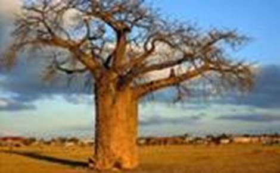

Общие сведения
Стебель – осевая часть побега, которая проводит растворы минеральных и питательных веществ, а также выносит листья к свету. Его видоизменение – цветок. Также стебли выполняют защитную (колючки), запасающую функции (стебель кактусов), обеспечивают вегетативное размножение (корневища), прикрепление к опоре (фасоль).
Знаете ли вы, что…
Карликовые кустарники имеют стволы диаметром несколько мм, тогда как секвойи имеют стволы диаметром до 10 м.
Самое большое дерево мира – баобаб (см. Рис. 1) – имеет ствол диаметром до 15 м.

Рис. 1. Баобаб
Самые длинные стебли имеют лианы, так, лиановидная пальма ротанг (см. Рис. 2) имеет стебли до 300 м.
Рис. 2. Лиановидная пальма ротанг
Продолжительность жизни побегов маленьких кустарников (черники, брусники) не более 12 лет, в то время как корневища живут до 200 лет. Они могут достигать 3 м в длину.
Разнообразие стеблей
Типы стеблей по степени одревеснения:
· Травянистые. В условиях умеренного климата обычно существуют 1 год. При неблагоприятных условиях у деревянистых растений надземные побеги отсутствуют. Распространены даже в пустынях и тундре (колокольчик, камнелом, фаукария).
· Деревянистые. Приобретают твердость благодаря отложению лигнина. Происходит, начиная со второй половины лета первого года жизни растения.
Типы стеблей по форме поперечного сечения:
· Округлые (злаковые)
· Сплюснутые (опунция)
· Гранистые (осока, щавель)
· Крылатые (чина лесная)
· Бочкообразные (баобаб)
Типы стеблей по направлению и характеру роста:
· Прямостоячие. У большинства растений, имеют развитую механическую ткань (подсолнечник, береза).
· Вьющиеся. Поднимаясь, обвивают опору, могут не иметь специальных зацепок (хмель, вьюнок полевой).
· Лазающие. Для прикрепления используют специализированные органы: усики, придаточные корни (горох, виноград, плющ).
· Лежачие (стелящиеся). Лежат на поверхности почвы, но не укореняются (вербейник).
· Ползущие. Стелятся по земле, могут укореняться в узлах (будра (см. Рис. 3), земляника).
Рис. 3. Будра
Жизненные формы растений
Дерево – типичная жизненная форма растений с деревянистым стеблем. Имеет один главный ствол или сестринские стволы. Продолжительность жизни древесного ствола может составлять несколько тысяч лет.
Кустарники – многолетние растения с деревянистыми стеблями. Во взрослом состоянии не имеют главного ствола. Стволы сменяют друг друга (сирень, боярышник (см. Рис. 4)). Обильны на границах лесов. В лесах образуют подлесок.
Рис. 4. Боярышник
Кустарнички – форма растений с деревянистыми стеблями. Многолетние низкорослые растения. Не имеют главного ствола. Почки зимуют под снегом. Широко распространены в преполярье и высоко в горах (черника, брусника, вереск (см. Рис. 5), водяника).
Рис. 5. Вереск
Травянистые растения (травы). Преобладающая жизненная форма. В умеренном климате не имеют постоянных надземных частей. В конце благоприятного для роста сезона их листья и стебли отмирают. Никогда не имеют постоянного одревесневшего ствола над землей. Травы бывают однолетними, двухлетними, многолетними.
Растения-пионеры – первые растения, заселяющие новые места обитания (мать-и-мачеха (см. Рис. 6), иван-чай).

Рис. 6. Мать-и-мачеха
Травянистые растения тропиков могут давать многолетние надземные части и достигать больших размеров (бананы (см. Рис. 7)).
Рис. 7. Растение банана
В стеблях травянистых растений отсутствует древесина, они не способны к росту в толщину, стебли сочные.
Лианы (см. Рис. 8) – растения, не способные к самостоятельному поддержанию стеблей в вертикальном положении. Для этого они используют опоры: другие растения, скалы, человеческие постройки. Это приспособление к получению света.
Рис. 8. Лиана
Стебли лиан:
· Лазающие
· Вьющиеся
Настоящие лианы – растения с деревянистыми стеблями. Также выделяют травянистые лианы. Стебли имеют сильно вытянутые междоузлия.
Обитают в лесах, в основном, тропических.
Представители: ротанг, лимонник (см. рис. 9), актинидия, хмель, мышиный горошек, чина.
Рис. 9. Лимонник
Выгонка цветущих побегов зимой
Срежьте на улице ветви вишни, яблони, багульника (см. Рис. 10).
Рис. 10. Багульник
Поставьте ветви в сосуд со свежей чистой водой, сосуд поставьте в светлое, теплое помещение с высокой влажностью. Через 1-2 недели на ветвях распустятся цветы, используйте их при изучении строения цветка.
Список литературы
1. Биология. Бактерии, грибы, растения. 6 кл.: учеб. для общеобразоват. учреждений / В.В. Пасечник. – 14-е изд., стереотип. – М.: Дрофа, 2011. – 304 с.: ил.
2. Тихонова Е.Т., Романова Н.И. Биология, 6. – М.: Русское слово.
3. Исаева Т.А., Романова Н.И. Биология, 6. – М.: Русское слово.
Дополнительные рекомендованные ссылки на ресурсы сети Интернет
1. Scienceland.info (Источник).
2. Landreform.kg (Источник).
3. Biolicey2vrn.ucoz.ru (Источник).
Домашнее задание
1. Биология. Бактерии, грибы, растения. 6 кл.: учеб. для общеобразоват. учреждений / В.В. Пасечник. – 14-е изд., стереотип. – М.: Дрофа, 2011. – 304 с.: ил. – с. 123, задание и вопрос 4 (Источник).
2. Какие существуют типы стеблей по форме поперечного сечения?
3. Назовите жизненные формы растений. Дайте их характеристику.
4. * Выберите 4 растения разных видов. Опишите внешнее строение их стеблей. Сравните. Обсудите результаты со своими друзьями и родителями.